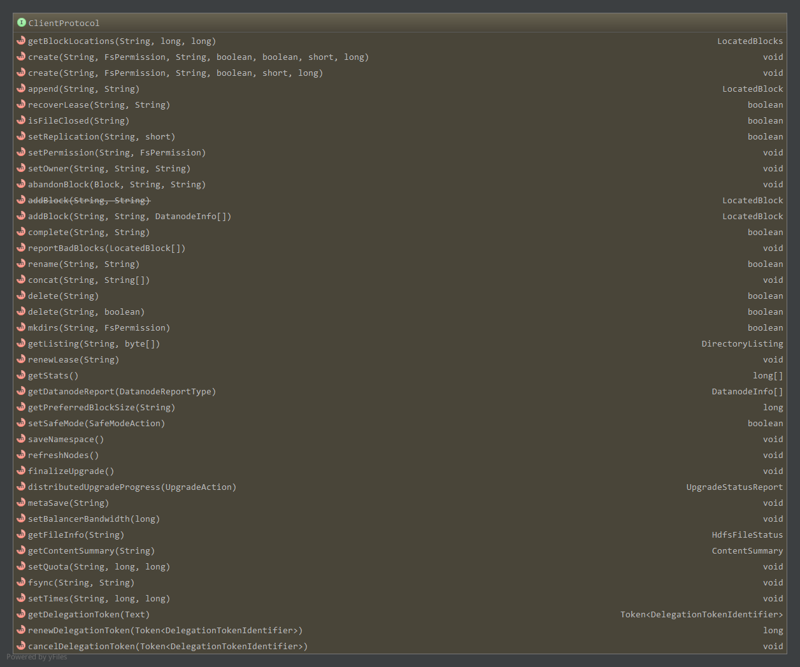
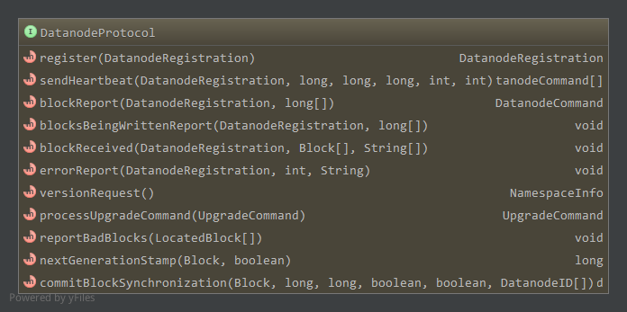
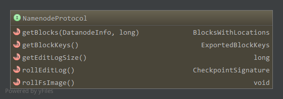

Hadoop版本:Hadoop-1.2.1
参考：《Hadoop技术内幕-深入解析Hadoop Common和HDFS架构设计与实现原理》
注意: 表格中N/A仅表示在程序中读取时没有缺省值，并不意味着在缺省配置文件中没有配置
HDFS中有NameNode节点，DataNode节点，SecondaryNameNode以及Client，他们之间的通信使用RPC进行通信。在Hadoop中使用RPC远程过程调用，客户端和服务器之间的协议必须实现VersionedProtocol接口，HDFS中与VersionedProtocol相关的接口如下:
ClientProtocol,由NameNode实现，为Client和NameNode之间RPC的协议，NameNode作为服务器，Client为客户端；DatanodeProtocol,NameNode实现，为DataNode和NameNode之间RPC的协议，NameNode作为服务器，DataNode作为客户端；RefreshUserMappingsProtocol和RefreshAuthorizationPolicyProtocol，安全相关；NamenodeProtocol，NameNode实现，为SecondaryNameNode和NameNode之间RPC协议，NameNode作为服务器，DataNode作为客户端；InterDatanodeProtocol，DataNode实现，为DataNode和DataNode之间的RPC协议；ClientDatanodeProtocol，DataNode实现，为Client和DataNode之间的RPC协议，DataNode作为服务器，Client为客户端；
1. ClientProtocol(大部分参考技术内幕)
ClientProtocol是Client和NameNode之间RPC使用的协议，由NameNode充当服务器，Client调用NameNode上实现的相关方法，声明的方法如下:

1.1 文件/目录相关(下表摘自技术内幕)
| Hadoop抽象文件系统FileSystem操作 | ClientProtocol接口上操作 | 描述 |
|---|---|---|
| URL.openStream FileSystem.open FileSystem.create FileSystem.append |
create append getBlockLocations |
打开一个文件。可以通过创建文件即create，或是在已有文件上追加append。也可以通过open，为读操作打开文件，这时需要通过getBlockLocations获取数据块的保存位置 |
| FSDataInputStream.read | getBlockLocations reportBadBlocks |
从文件中读取数据。读数据的read操作会转换成对数据块的读操作，通过getBlockLocations获得数据块的位置。读数据发现数据有错误的时候，通过reportBadBlocks报告给NameNode |
| FSDataOutputStream.write | addBlock abandonBlock |
向文件中写数据。写数据的过程中，如果需要新的数据块，必须通过addBlock向NameNode申请。写数据出现错误时，可以通过abandBlock放弃申请到的数据块 |
| FSDataInputStream.close FSDataOutputStream.close |
fsync complete |
关闭一个文件。关闭文件时，先调用fsync，持久化数据，然后调用complete方法，通知NameNode文件关闭 |
| FSDataInputStream.seek | getBlockLocations | 改变文件读写位置，有时需要通过getBlockLocations，重新定位数据块位置 |
| FileSystem.getFileStatus FileSystem.getContentSummary FileSystem.get* |
getFileInfo getContentSummary |
getFileInfo用于获取文件/目录的属性，getContentSummary可获得文件/目录使用的存储空间信息 |
| FileSystem.set* | setPermission setOwner setTimes setReplication |
修改文件属性 |
| FileSystem.createNewFile | N/A | 创建一个文件。在FileSystem中，默认通过create创建一个文件，然后立即通过输出流的close方法关闭文件，从而达到创建一个新的空文件的目的 |
| FileSystem.delete | delete | 删除一个文件/目录 |
| FileSystem.rename | rename | 更改文件名 |
| FileSystem.mkdirs | mkdirs | 创建子目录 |
| FileSystem.listStatus | getListing | 读取一个目录下的项目 |
| FileSystem.setWorkingDirectory FileSystem.getWorkingDirectory |
N/A | 设置/获取当前工作目录，HDFS中不存在当前工作目录的概念，所有路径为绝对路径 |
上表中涉及HDFS中使用的一些对象，如getBlockLocations返回的LocatedBlocks对象，为指定路径开始偏移量指定长度数据所属的多个Block信息，包含所属的DataNode信息。addBlock返回的向NameNode申请到的LocatedBlock对象，为一个Block信息，包含所属的DataNode信息。getFileInfo返回的HdfsFileStatus，为HDFS中的文件状态对象。getListing返回的DirectoryListing对象，维护了目录下的所有文件状态，具体见HDFS相关实体对象。
关于上表还需注意的是，在FileSystem中，open，create，append返回的是对应的文件系统输入/输出流，而在ClientProtocol中的create和append方法返回的是void，他们只是实现FileSystem中同名方法的一个步骤。
1.2 写数据相关
可以通过create创建一个新的文件或者append追加文件，然后向文件中写数据。
1.2.1 create
ClientProtocol.create在HDFS目录树中创建一个新的文件1
2public void create(String src, FsPermission masked, String clientName, boolean overwrite,
boolean createParent, short replication, long blockSize ) throws IOException;
在文件系统中创建一个空文件src，src必须是绝对路径，HDFS中没有当前工作目录的概念。创建完成后，该文件能够被其他客户端访问(写数据等)，不过其他客户端不能delete，重新创建，rename该文件直到该文件被通知完成(complete方法)或者租约到期。
create创建文件后，该文件可被客户端访问，通过addBlock为指定的已经打开的文件添加一个数据块，然后往数据块中写数据1
public LocatedBlock addBlock(String src, String clientName, DatanodeInfo[] excludedNodes) throws IOException;
如上，excludedNodes告知名字节点在选择数据节点时排除某些数据节点。该方法返回LocatedBlock，接下来客户端便可连接对应的DataNode然后往该数据块写数据。
当客户端联系不上名字节点通过addBlock返回的数据节点时，需要通过abandonBlock方法放弃这个数据块，并重新申请新的数据块。
1.2.2 append
append直接返回指定的需要写数据的数据块LocatedBlock对象1
public LocatedBlock append(String src, String clientName) throws IOException;
1.2.3 fsync
fsync方法通知名字节点持久化对应文件的相关信息，包括文件的元数据，文件包含的数据块，当前打开的这个文件的客户端标识等，但不保证写到数据节点上的数据持久化1
public void fsync(String src, String client) throws IOException;
1.2.4 complete
无论是通过create然后addBlock写数据还是直接通过append写数据，写数据结束后，都应该将其关闭，complete方法通知名字节点客户端已经完成文件的写操作1
public boolean complete(String src, String clientName) throws IOException;
1.2.5 租约(摘自技术内幕)
在名字节点，租约记录了客户端为写数据而打开文件的信息，也可以理解为名字节点将写特定文件的权限授权给该客户端，客户端通过renewLease定时更新它的租约。
客户端调用ClientProtocol.renewLease，相当于往名字节点发送心跳信息，如果名字节点长时间没有收到客户端的租约更新，就可以认为客户端已经崩溃，名字节点会试图关闭文件，以防止资源泄漏。1
public void renewLease(String clientName) throws IOException;
如果客户端从崩溃中回复，并试图继续未完成的写文件操作，这时候使用recoverLease回复租约1
public boolean recoverLease(String src, String clientName) throws IOException;
src用于指定需要恢复租约的文件路径，如果方法返回true，表明这个文件已经被成功关闭，可以通过append打开文件，继续写数据。
而如果名字节点出现问题，发生崩溃，当名字节点从错误中恢复时，可以根据名字节点的日志记录，恢复租约信息。
1.3 读数据相关
主要通过getBlockLocations返回指定的数据块信息，然后进行相应的读取1
public LocatedBlocks getBlockLocations(String src, long offset, long length) throws IOException;
当读数据出错(校验)时，通过reportBadBlocks向名字节点报告1
public void reportBadBlocks(LocatedBlock[] blocks) throws IOException;
1.4 dfsadmin相关
ClientProtocol其他的方法用于实现多功能工具dfsadmin
1.4.1 setQuota
1 | public void setQuota(String path, long namespaceQuota, long diskspaceQuota) throws IOException; |
设置目录path的配额，namespaceQuota为path下文件或目录的数量限制，diskspaceQuota为path下占磁盘空间大小的限制。
配额可以有四种值:
>=0,设置配额为该值；FSConstants.QUOTA_DONT_SET(Long.MAX_VALUE)维持原来的值；FSConstants.QUOTA_RESET(-1)，配额重置- 其他，运行时异常
1.4.2 setSafeMode
1
2public boolean setSafeMode(FSConstants.SafeModeAction action) throws IOException;
public enum SafeModeAction{ SAFEMODE_LEAVE, SAFEMODE_ENTER, SAFEMODE_GET; }
安全模式下，HDFS向客户端提供只读视图，不接受对名字空间的更改，包括创建文件，删除目录等操作；同时，名字节点也不会进行数据块的复制或删除，如副本数小于正常水平的数据块复制。
如上，可设置离开安全模式，进入安全模式，获取当前安全模式状态。
1.4.3 saveNamespace
1 | public void saveNamespace() throws IOException; |
名字节点将当前内存中文件系统镜像保存到新的命名空间镜像(fsimage)中，并重置日志文件，需要工作在超级用户权限且为安全模式中。
1.4.4 metaSave(技术内幕)
1 | public void metaSave(String filename) throws IOException; |
将名字节点中主要数据结构保存到指定文件filename中，该文件包含的信息有:名字节点收到的数据节点心跳信号，等待被复制的数据块，正在被复制的数据块，等待被删除的数据块等。
不需要处于安全模式中。
1.4.5 refreshNodes(技术内幕)
1 | public void refreshNodes() throws IOException; |
通知名字节点重新读hosts文件和exclude文件。Hadoop管理员可能随时添加或者移除节点，因此通过该方法通知名字节点重新读取节点信息。
该方法不带参数，所需要的信息保存在两个文件中:include文件(一般在配置目录下)用于指定可以连接到名字节点的数据节点列表，exclude文件指定要移除的数据节点。
1.4.6 升级
升级相关的有distributedUpgradeProgress查询升级的进度，finalizeUpgrade提交升级1
2public UpgradeStatusReport distributedUpgradeProgress(UpgradeAction action) throws IOException;
public void finalizeUpgrade() throws IOException;
通过”-upgrade”选项启动HDFS可以开始一次系统升级，升级启动后，可以通过distributedUpgradeProgress使用不同的参数，获得当前系统的升级状态，升级状态的细节，或者进行强制升级操作。
finalizeUpgrade提交HDFS的升级操作，通过提交后才能完成升级操作。finalizeUpgrade会让数据节点和名字节点执行一些升级后的清理操作，清理操作完成后，升级过程完成。
2. DatanodeProtocol
DatanodeProtocol为数据节点和名字节点之间通信的接口，包含的方法如下:

2.1 握手，注册，数据块上报和心跳(技术内幕)
数据节点启动时，会先和名字节点进行握手，使用的是versionRequest方法，返回值为NamespaceInfo对象，检查相应数据节点和名字节点的版本号，不匹配导致数据节点退出。
数据节点通过register方法向名字节点注册，参数为DatanodeRegistration对象，见HDFS相关实体对象，包含了NameNode标识一个数据节点所需的全部数据。
注册成功后，数据节点通过blockReport方法，上报它所管理的全部数据块信息，帮助名字节点建立数据块和数据节点的映射关系。blockReport的第一个参数用来标识数据节点，第二个参数包含数据块的信息。blockReport一般只在数据节点启动的时候使用，而一般情况下通过心跳向名字节点报告自己的状态。
DataNode通过sendHeartbeat来向NameNode发送心跳信息。除了携带标识DataNode身份的DatanodeRegistration对象外，还包括数据节点当前的运行情况的信息。这些信息包括数据节点的容量，已经使用的容量，剩余容量，正在写文件的连接数，读写数据使用的线程数等。返回值为DatanodeCommand对象，执行相应的命令。
2.2 数据块操作相关(技术内幕)
HDFS使用CRC32进行错误检测，会在3中情况下检验校验和:
- 数据节点接收数据后，存储数据前
- (某些情况下)客户端读取数据节点上的数据时
- 数据节点上DataBlockScanner扫描线程定期扫描数据块
当发现数据块有问题(校验出错)时，就会通过reportBadBlocks上报给名字节点，参数为LocatedBlock数组，即出错的区块信息。
数据节点使用blockReceived向名字节点报告它已经完整的接受了一些数据块，接收来源可以是客户端(用户往HDFS中写文件)，也可以是其他的数据节点(数据块复制DNA_TRANSFER)或者均衡器触发的数据复制。blockReceived第一个参数为报告接收完成的数据节点标识，第二个为接收完成的区块，第三个参数由均衡器使用1
public void blockReceived(DatanodeRegistration registration, Block blocks[], String[] delHints) throws IOException;
方法blocksBeingWrittenReport，nextGenerationStamp和commitBlockSynchronization都和系统异常处理有关。
当系统支持append时，数据节点会在注册后，调用blocksBeingWrittenReport向名字节点报告当前正处于写状态的数据块信息，以帮助名字节点进行租约恢复。nextGenerationStamp用于向名字节点申请一个新的数据块版本号，数据块恢复过程中需要一个新的数据块版本号，以区分同一数据块修复前后的差别。
数据块恢复完成后，无论结果是成功还是失败，都需要通过commitBlockSynchronization告知数据块恢复的执行情况。1
2public void commitBlockSynchronization(Block block, long newgenerationstamp, long newlength,
boolean closeFile, boolean deleteblock, DatanodeID[] newtargets ) throws IOException;
参数分别为进行修复的数据块，通过nextGenerationStamp申请的新版本号，数据块恢复后新的长度，所述文件是否由名字节点关闭，是否删除名字节点上的数据块信息，成功参与数据块恢复的数据节点列表。
2.3 errorReport和processUpgradeCommand
DataNode通过errorReport向NameNode上报运行过程中发生的一些状况，如磁盘不可用，等待被复制的数据块不存在等。processUpgradeCommand和系统升级有关，用于向名字节点报告升级状态。
3. RefreshUserProtocol和RefreshAuthorizationPolicyProtocol
这两个接口与安全相关1
2
3
4
5
6
7
8
9
10
11
12
13
14public interface RefreshUserMappingsProtocol extends VersionedProtocol {
public static final long versionID = 1L;
//刷新用户-组的映射
public void refreshUserToGroupsMappings() throws IOException;
//刷新超级用户代理列表
public void refreshSuperUserGroupsConfiguration() throws IOException;
}
public interface RefreshAuthorizationPolicyProtocol extends VersionedProtocol {
public static final long versionID = 1L;
void refreshServiceAcl() throws IOException;
}
4. NamenodeProtocol(技术内幕)
NameNodeProtocol由NameNode实现，由SecondaryNameNode和均衡器作为客户端调用。
方法如下:

前两个方法getBlocks和getBlockKeys被均衡器使用，getBlocks获得某一个数据节点上指定大小数据对应的数据块信息，根据这些信息，均衡器可以把数据块从该数据节点移动到其他数据节点，达到平衡各个数据节点数据块数量的目的。getBlockKeys用于支持这个过程中需要的安全特性。
后三个方法被SecondaryNameNode使用。getEditLogSize可获得名字节点上编辑日志的大小，如果日志很小，第二名字节点就不需要合并镜像数据和编辑日志，即使名字节点发生故障也可以很快就恢复过来。
SecondaryNameNode通过rollEditLog通知名字节点开始一次合并过程，这时名字节点会停止使用当前的编辑日志，并启用新的日志文件以方便第二名字节点通过基于http的流式接口，获取待合并的命名空间镜像和镜像编辑日志。rollEditLog返回一个CheckpointSignature对象，标识一次合并点。
SecondaryNameNode上的合并完成后，通过http接口上传新的元数据镜像，操作完成后，无参的远程方法rollFSImage被调用，名字节点进行一些必要的处理，最终完成一次元数据合并。
5. InterDatanodeProtocol
InterDatanodeProtocol为数据节点间的接口。1
2
3
4
5
6
7
8
9
10
11
12public interface InterDatanodeProtocol extends VersionedProtocol {
public static final Log LOG = LogFactory.getLog(InterDatanodeProtocol.class);
public static final long versionID = 3L;
//返回一个区块的元信息
BlockMetaDataInfo getBlockMetaDataInfo(Block block) throws IOException;
BlockRecoveryInfo startBlockRecovery(Block block) throws IOException;
//更新旧oldblock为newblock，finalize数据节点完成更新后是否提交数据块
void updateBlock(Block oldblock, Block newblock, boolean finalize) throws IOException;
}
startBlockRecovery用于获得参与到数据块恢复过程的各个数据节点上的数据块信息，返回值是一个BlockRecoveryInfo对象，见HDFS相关实体对象。处于协调者地位的数据节点，根据BlockRecoveryInfo中的信息，计算出数据块恢复后数据块的新长度，和名字节点交换一些信息后，通过updateBlock方法通知其他数据节点，将各个节点上的待修复数据块更新。
6. ClientDatanodeProtocol
ClientDatanodeProtocol为客户端和数据节点之间的接口。支持的方法如下:1
2
3
4
5
6
7
8
9
10public interface ClientDatanodeProtocol extends VersionedProtocol {
public static final Log LOG = LogFactory.getLog(ClientDatanodeProtocol.class);
public static final long versionID = 4L;
LocatedBlock recoverBlock(Block block, boolean keepLength, DatanodeInfo[] targets) throws IOException;
Block getBlockInfo(Block block) throws IOException;
BlockLocalPathInfo getBlockLocalPathInfo(Block block, Token<BlockTokenIdentifier> token) throws IOException;
}
recoverBlock方法应用于HDFS客户端DFSClient的输出流DFSOutputStream中，客户端往数据节点输出数据的过程中，如果某个副本所在的数据节点出现错误，客户端会使用recoverBlock尝试进行数据快恢复，从正常工作的数据节点中找到恢复点，然后才能继续输出数据。getBlockInfo和HDFS的文件爱你一致性模型有关，输入的是一个Block对象，输出的是(可能)更新过的，反映数据变化的新的Block对象。BlockLocalPathInfo用于本地读优化，获得某个数据块对应的数据块文件和数据校验信息文件的本地路径。